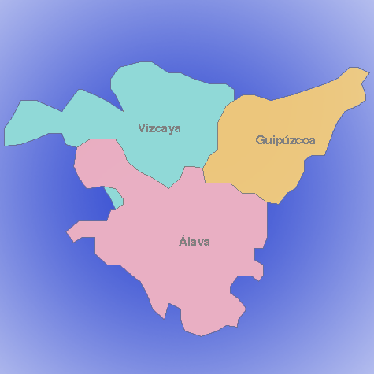

Volver a ejercicios
VISITE EUSKADI

Para acceder directamente a una provincia:
Pulse encima del mapa, en la zona correspondiente a la provincia requerida.
Elija una de las opciones de la siguiente lista:
Bizkaia
Gipuzkoa
Araba